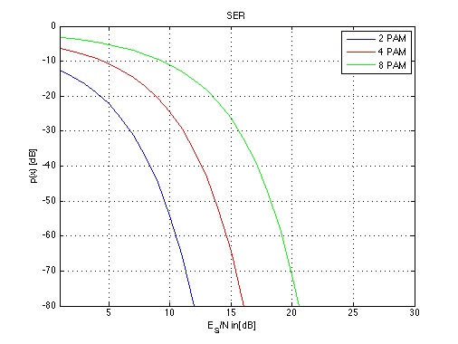

SER for 2- 4- & 8-PAM
Copyright 2007 Telecommunications Lab
ES_N_dB=[1:40]; ES_N_lin=10.^(0.1*ES_N_dB); i=1; for (M=2:2:8), p_e_(i,:)=(M-1)/(M) .* erfc(sqrt(3/(M^2-1)*(log(M)/log(2)).*ES_N_lin)); p_e(i,:)=10*log10(p_e_(i,:)); i=i+1; end; subplot(1,1,1); plot(ES_N_dB,p_e(1,:),ES_N_dB,p_e(2,:),'r',ES_N_dB,p_e(4,:),'g','LineWidth',1.5); legend('2 PAM','4 PAM','8 PAM') title('SER') xlabel('E_S/N in[dB]') axis([1 30 -80 0]) ylabel('p(x) [dB]') grid on; hold off;